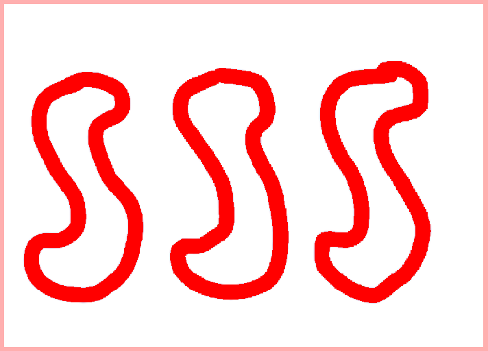

Set!
The hit game of Set digitized! Take a look for yourself.
Here is what a board looks like.
The Rules
There are 12 cards on the field. Each has four traits:
- Color: Red, Green, or Purple
- Shape: Diamond, Oval, or Squiggle
- Number: One, Two, or Three
- Filling: Solid, Shaded, or White
Sets
A set is made of three cards where each of the traits are all the same or all different. Your goal is to find as many sets as possible. You can select cards by clicking them. The image above shows a highlighted set. This set has one shared trait (color: red) and three differing traits.
To call a set for your player or team, type a number. Typing '1' will allocate the points to player 1 and refill the table with cards from the deck until the deck runs out.
Players can also type 'u' to deselect the cards, 'm' to shuffle the cards on the screen, and 'r' to start a new game.
Pretty simple, right?
In fact, this game of set supports two more combinations of cards to find. Once finding sets becomes easy, challenge yourself with...
Planets
If you pick two cards at random, there is exactly one card that would have the right traits to make a set with the chosen two cards. A planet is simply two pairs of cards that would need the same third card to make a set.
Here is a particularly clear example of a planet. The two purple cards need a card with three purple diamonds with no filling: The red and green cards need the same thing: three purple diamonds with no filling. These four make a planet. Here is another example.
The two purple cards need a card with three purple squiggles with shading:  The red and green cards need the same thing.
The red and green cards need the same thing.
Finally, if that's too easy for you, we got...
Ghost Sets
Now, instead of picking two pairs, you need to pick three pairs. And, instead of the missing cards being the same, the missing cards themselves need to make a set. Check this out.
The red cards, purple cards, and green cards are the pairs. The red cards need . The green cards need . The purple cards need . You'll notice that these cards make a set.
These actually make a ghost set no matter which 'pairs' you choose.
Acknowledgements
Thank you to Anu Datar of the Harker Upper School for teaching AP Computer Science with Data Structures to prepare me for this project. Thank you to the creators of this wonderful game. Finally, thank you to Ellen Guo (Columbia University, Class of 2024) for illustrating all 81 cards.